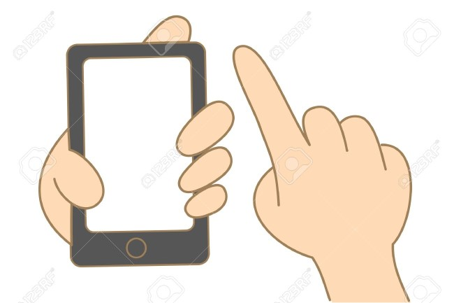
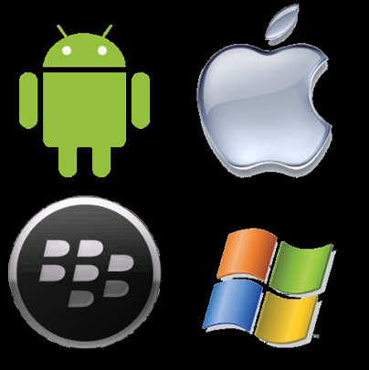
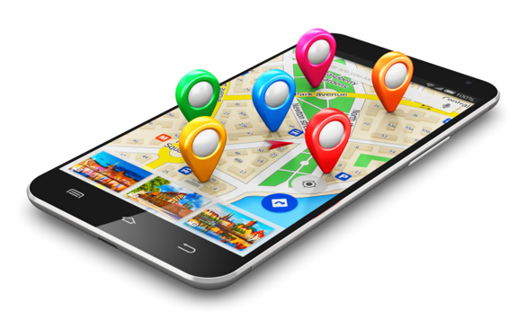

7.Mobile Commerce.
La explosión del canal móvil
Los dispositivos móviles han cambiado el mundo online.
El canal móvil ha dejado de ser tendencia.
Cada vez hay más consumidores que acceden al mundo online a través del móvil
Los smartphones son un dispositivo totalmente personal.
¿Por qué es tan importante el canal móvil y por qué las empresas deben estar presentes?
La amplitud de un mercado en constante evolución y crecimiento
Permite mejorar la comunicación con un usuario que está conectado 24/7.
Aporta visibilidad al establecimiento.
Mejora el impacto de las acciones.
Aporta valor y riqueza a un número mayor de consumidores.
Posibilita la adopción y fidelidad a la marca
Supone un ahorro de costes
Tener éxito en el canal móvil
Depende del tipo de empresa, la marca, el producto o servicio que esta ofrece, así como el objetivos que quieran alcanzar, estas variables marcaran la estrategia y su ejecución para el canal móvil.
Los cambios que ha generado el canal móvil
Consultar un producto anunciado en televisión.
Buscar información sobre productos o servicios de interés.
Comparar precios en una tienda, antes de adquirir un producto.
Escanear un código QR en un medio de comunicación, en un anuncio publicitario o en una etiqueta de un producto.
Plataformas móviles
Android, Windows Phone, Blackberry, Otros- Symbian WinMobile y Bada
Marketing Móvil
Según el Internet Advertising Bureau (IAB) los teléfonos inteligentes están destinado a convertirse en el producto más importante del planeta y esto favorece el marketing por tres razones
Es personal, los usuario lo lleva las 24 horas del día y el usuario puede conectarse en cualquier momento y en cualquier lugar.
Aplicaciones móviles
Las aplicaciones móviles son el motivo de uso de los teléfonos de un 70%.
Para sacar el mayor provecho a las aplicaciones móviles, hay una serie de claves que nos llevaran a un manejo mas optimo.
Superar la barrera de la visibilidad.
Conocer a la audiencia
Comunicarse con los usuarios
Tipos de aplicaciones: Nativas y Web
Aplicaciones nativas: Son aquellas aplicaciones desarrolladas de manera específica para un tipo de plataforma y se caracterizan por:
Nos permiten el uso de las aplicaciones de los dispositivos tales como el GPS, calendario, contactos, videos, audio, etc.
Modelos de negocio:
Aplicación de pago o “Premium”
Aplicación Gratuita
Aplicación gratuita con contenido de pago adicional "Free-mium"
Geolocalización
La integración del GPS permite acceder a la ubicación de los usuarios, teniendo acceso a las ofertas que le rodean, por lo cual favorece el marketing.
El 88% de las búsquedas que hacen los usuarios tienen que ver con información local
SOLOMO: SOcial, LOcal, MÓvil
SOcial: Puedes compartir contenidos y hacer sugerencias a una lista de contactos.
LOcal: Te proporciona información sobre establecimientos cercanos, con ofertas y promociones.
MOvil: Posibilidad de acceder al contenido de la aplicación en cualquier momento y en cualquier lugar.
Realidad Aumentada
Es un sistema que capta la atención del usuario, mezclando la información virtual superpuesta sobre una imagen real, captada con la cámara del dispositivo
Cupones
Es un modelo de negocio que logra que el consumidor tome la decisión de manera inmediata a adquirir un producto, al establecerse un tiempo límite para acceder a la promoción.
M-Commerce
No es sólo la versión móvil del e-commerce
Según un informe realizado por Forrester el e-commerce crecerá en: España un 19%,Japón el 40%
Factores que atraen a los usuarios
Libertad,Ahorro de tiempo,Encontrar la mejor oferta,Toma de decisione
Confianza, Seguridad, Privacidad, Usabilidad, Conexión, Tecnología.